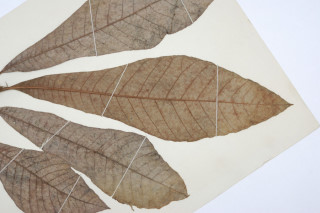
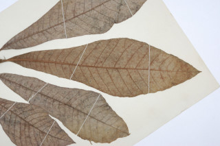

Large trees, up to 35 tall
ದೊಡ್ಡದಾದ ಈ ಮರಗಳು 35 ಮೀ ಎತ್ತರದವರೆವಿಗೆ ಬೆಳೆಯುತ್ತವೆ.
35 മീറ്റര് വരെ ഉയരത്തില് വളരുന്ന വന്മരങ്ങള്.
உயர்ந்த பெரிய மரம் 35 மீ. உயரம் வரை வளரக்கூடியது.
Bark smooth
ತೊಗಟೆಯ ಮೇಲ್ಮೈ ನಯವಾಗಿರುತ್ತದೆ.
മിനുസമാര്ന്ന പുറംതൊലി.
மரத்தின் பட்டை வழுவழுப்பானதாக இருக்கும்.
Branchlets stout, terete
ಕಿರುಕೊಂಬೆಗಳು ಬಲಿಷ್ಟವಾಗಿದ್ದು,ಗುಂಡಾಕೃತಿಯಲ್ಲಿರುತ್ತವೆ.
ഉറച്ചതും ഉരുണ്ടതുമായ ഉപശാഖകള്.
தடித்த சிறிய நுனிக்கிளைகள், குறுக்குவெட்டுத் தோற்றத்தில் வளையமானது.
Latex black
ಸಸ್ಯಕ್ಷೀರ ಕಪ್ಪುಬಣ್ಣವುಳ್ಳದಾಗಿರುತ್ತದೆ
കറുത്ത സ്രവം
கறுப்பு நிறமான பிசின்.
Leaves simple, alternate, spiral, clustered at twig ends; petiole stout, 3.8 cm long, canaliculate, ferruginous tomentose with 1 or 2 pairs of long, persistent, brown villous pubescent spurs; lamina 19-44 x 7-20 cm, oblanceolate with upper half broadly rounded or triangular, subacuminate, lower half, base cuneate to acute, margin ciliate, coriaceous, ferruginous tomentose when young, pubescent beneath when mature; midrib ciliate above, flat; secondary_nerves ca. 30 pairs; tertiary_nerves reticulate.
ಎಲೆಗಳು ಸರಳ, ಪರ್ಯಾಯ – ಸುತ್ತು ಜೋಡನಾ ವ್ಯವಸ್ಥೆಯಲ್ಲಿ ಕುಡಿಕೊಂಬೆಗಳ ತುದಿಯಲ್ಲಿ ಗುಂಪಾಗಿರುತ್ತವೆ.ಎಲೆತೊಟ್ಟು 3.8 ಸೆಂ.ಮಿ.ಉದ್ದವಾಗಿದ್ದು, ಕಾಲುವೆ ಆಕಾರದ ಗೆರೆಗಳನ್ನು ಹೊಂದಿದ್ದು, ತುಕ್ಕಿನ ಬಣ್ಣದ, ದಟ್ಟವಾದ ಮೃದುತುಪ್ಪಳದಿಂದ ಕೂಡಿರುತ್ತದೆ. ಚಾಚುಚೀಲಗಳು 1 ರಿಂದ 2 ಜೋಡಿಗಳಿದ್ದು , ಕಂದು ಬಣ್ಣದ ಮೃದುರೋಮಗಳಿಂದ ಆವೃತ್ತವಾಗಿದ್ದು, ದೃಢವಾಗಿರುತ್ತದೆ.ಎಲೆಪತ್ರ 19 – 44 x 7-20 ಸೆಂ.ಮಿ.ಗಾತ್ರದಲ್ಲಿದ್ದು,ಬುಗುರಿ-ಈಟಿ ಸಮ್ಮಿಶ್ರಾಕಾರವನ್ನು ಹೊಂದಿರುತ್ತದೆ; ಪತ್ರದ ಮೇಲಿನ ಅರ್ಧ ಭಾಗ ವಿಶಾಲವಾದ ಗುಂಡಾಕಾರ ಅಥವಾ ತ್ರಿಕೋನಾಕಾರವಾಗಿದ್ದು,ಉಪ-ಕ್ರಮೇಣವಾಗಿ ಚೂಪಾಗುವ ತುದಿಯನ್ನೂ, ಕೆಳಗಿನ ಅರ್ಧ ಭಾಗ ಬೆಣೆಯಾಕಾರದದಿಂದ ಹಿಡಿದು ಚೂಪಾಗುವ ಬುಡಭಾಗವನ್ನೂ ಹೊಂದಿರುತ್ತವೆ; ಅಂಚು ಕೂದಲುಯುಕ್ತವಾಗಿದ್ದು, ಮೇಲ್ಮೈ ತೊಗಲಿನ ತರಹವಿರುತ್ತದೆ. ಪತ್ರಗಳ ಎಳೆಯದಾಗಿದ್ದಗ ತುಕ್ಕಿನಬಣ್ಣ, ದಟ್ಟ ಮೃದುತುಪ್ಪಳದಿಂದ ಕೂಡಿರುತ್ತದೆ.ಬಲಿತ ಪತ್ರಗಳ ತಳಭಾಗ ಮೃದುತುಪ್ಪಳ ಸಹಿತವಾಗಿರುತ್ತದೆ; ಮಧ್ಯನಾಳ ಪತ್ರದ ಮೇಲ್ಭಾಗ ಚಪ್ಪಟೆಯಾಗಿದ್ದು, ಕೂದಲು ಸಹಿತವಾಗಿರುತ್ತದೆ; ಪತ್ರದಲ್ಲಿ ಸುಮಾರು 30 ಜೋಡಿ ಎರಡನೇ ದರ್ಜೆ ನಾಳಗಳಿದ್ದು ಮೂರನೇ ದರ್ಜೆ ನಾಳಗಳು ಜಾಲಬಂಧ ವಿನ್ಯಾಸ ಹೊಂದಿರುತ್ತವೆ.
ഇലകള് ലഘുവും ഏകാന്തര ക്രമത്തില്, വര്ത്തുളമായി, ശാഖകളുടെ അറ്റത്ത്, കൂട്ടമായി ക്രമീകരിച്ചിരിക്കുന്നതുമാണ്; ഇലഞെട്ടുകള് ഉറച്ചതും 3.8 സെ.മീ. നീളമുള്ളതും, ചാലോടു കൂടിയതും തുരുമ്പന് രോമിലവും, തവിട്ട് നിറത്തിലുള്ള കനത്ത രോമാവൃതമായ, ഒന്നോ രണ്ടോ ജോഡി, നീളമുള്ള നിലനില്ക്കുന്ന നീളന് രോമത്തോട് കൂടിയതുമാണ്; അപകുന്താകാരത്തിലുള്ള പത്രഫലകത്തിന് 19 മുതല് 44 സെ.മീ. നീളവും 7 മുതല് 20 സെ.മീ. വീതിയുമുണ്ട്, ഇതിന്റെ മേല് പകുതി ത്രികോണാകാരമോ വീതിയേറിയ വൃത്താകാരത്തോട് കൂടിയതും ഉപ ദീര്ഘാഗ്രത്തോട് കൂടിയതുമാണ്, താഴത്തെ പകുതിപത്രാധാരം ആപ്പിന്റെ ആകൃതിയിലോ നിശിതമോ ആണ്, അരികുകള് രോമിലമാണ്, ചര്മ്മില പ്രകൃതത്തോട്കൂടിയതാണ്, ഇളതായിരിക്കുമ്പോള് കനത്ത തുരുമ്പന് രോമിലമായും മൂക്കുമ്പോള് കീഴ്ഭാഗം ലഘുരോമിലവുമായിരിക്കും; മധ്യസിര മുകള് ഭാഗത്ത് പരന്നതും രോമങ്ങളോടു കൂടിയതുമാണ്; ദ്വിതീയ ഞരമ്പുകള് ഏതാണ്ട് 30 ജോഡി; ജാലികാവിന്യാസം തീര്ക്കുന്ന ത്രിതീയ ഞരമ്പുകള്.
இலைகள் தனித்தவை, மாற்றுஅடுக்கமானவை, சுழல் போன்று அமைந்தவை, நுனிக்கிளையில் இலைகள் கூட்டமாக மற்றும் நெருக்கமாகமைந்தவை; இலைக்காம்பு தடித்து 3-8 செ.மீ. நீளம், குறுக்குவெட்டுத் தோற்றத்தில் கேனாலிகுலேட், மெண்மையான அரக்கு நிறமுடைய உரோமங்களுடையது, ஒன்று அல்லது இரண்டு ஜோடி நீளமான, உதிராத, அரக்கு நிறமான உரோமங்களுடைய ஸ்பர் கொண்டது; இலை அலகு 19-44 X 7-20 செ.மீ., தலைகீழ் ஈட்டி வடிவம், மற்றும் நுனிப்பகுதி பரந்த வட்ட அல்லது முக்கோண வடிவானது அலகின் நுனி சிறிது அதிக்கூரியது, அலகின் தளம் ஆப்பு வடிவம் முதல் கூரியது, அலகின் விளிம்பு உரோமங்களுடையது, கோரியேசியஸ், கொழுந்து இலைகளில் அரக்கு நிறமுடைய மென்உரோமங்கள் காணப்படும், முதிர்ந்த இலைகளில் கீழ்பரப்பு உரோமங்களற்றது; மையநரம்பின் மேல் மென்உரோம தூவிகள் காணப்படும்; இரண்டாம் நிலை நரம்புகள் சராசரி 30 ஜோடிகள், மூன்றாம் நிலை நரம்புகள் வலைபின்னல் அமைப்பு கொண்டது.
Inflorescence axillary and terminal panicles, flowers polygamous
ಹೂಗಳು ಸಂಕೀರ್ಣಲಿಂಗಿಗಳಾಗಿದ್ದು ಅಕ್ಷಾಕಂಕುಳಿನ ಅಥವಾ ತುದಿಯಲ್ಲಿನ ಪುನರಾವೃತ್ತಿಯಾಗಿ ಕವಲೊಡೆದ ಪುಷ್ಪಮಂಜರಿಯಲ್ಲಿರುತ್ತವೆ
പൂങ്കുലകള് ബഹുലിംഗ പുഷ്പങ്ങളുള്ള കക്ഷീയമോ ഉച്ഛസ്ഥമോ ആയ പാനിക്കിളുകളാണ്.
மஞ்சரி இலைக்கோணங்களில் அல்லது தண்டின் நுனியில் அமைந்த பேனிக்கிள், மலர்கள் இருபாலானவை கொண்டது.
Drupe, half embedded within hypocarp, 1-seeded
ಕಾಯಿಗಳು ಡ್ರೂಪ್ ಮಾದರಿಯವು ಹಾಗೂ ಒಂದು ಬೀಜವನ್ನು ಒಳಗೊಂಡಿದ್ದು ಅರ್ಧದಷ್ಟು ಭಾಗ ಹೈಪೋಕಾರ್ಪಿನಲ್ಲಿ ಹುದುಗಿಕೊಂಡಿರುತ್ತದೆ.
ഫലങ്ങള് ഹൈപോകാര്പ്പില് പാതിയുറപ്പിച്ചിരിക്കുന്ന, ഒറ്റ വിത്തുള്ള അഭ്രകങ്ങളാണ് (ഡ്രൂപ്പ്).
உள்ளோட்டுத்தசைகனி (ட்ரூப்), பூத்தண்டு கிண்ணம் கனியை பாதி வரை முடியிருக்கும்.
 
